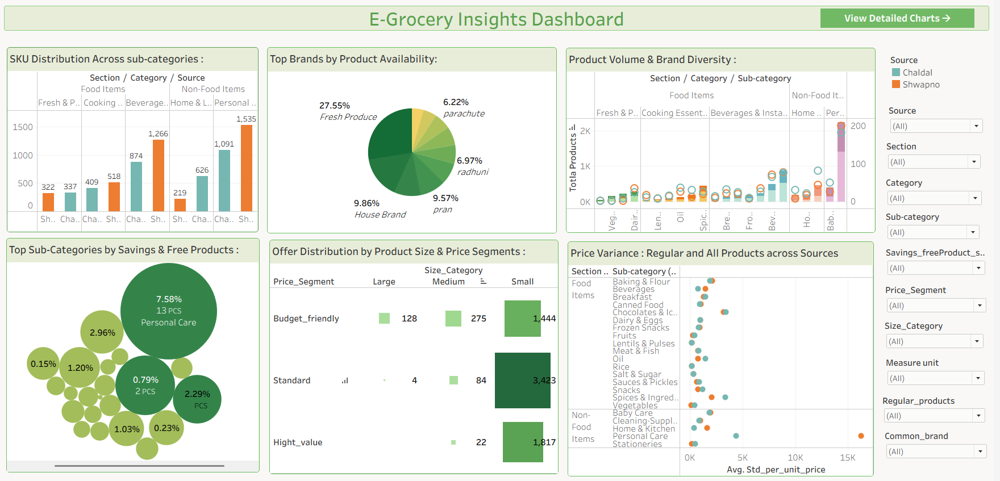

E-Grocery Insights BD
View on GitHub →
Python
Selenium
Pandas
Tableau
GitHub
A market-intelligence project tracking live pricing across online grocery platforms in Bangladesh — built to surface offer trends and brand dominance the way an analyst would track a competitive market.
- Scraped live product and pricing data from online grocery platforms using Selenium.
- Cleaned and transformed data with pandas / numpy in Jupyter Notebook.
- Built an interactive Tableau dashboard visualizing pricing trends, offer & savings distribution, brand dominance, and market insights.
- Published the full project on GitHub.
